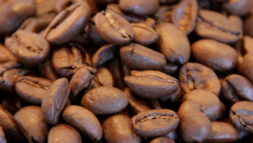

Teksturnya sedikit mirip teh dan setingkat lebih “tanned” dari light roast. Hampir sama seperti light roast, jika melihat biji kopi yang disangrai dalam level ini, maka kita pun tidak akan menemukan minyak kopi yang terlalu kentara pada bijinya. Namun jika kamu mencoba dua kopi seduhan ala manual brew yang masing-masing disangrai dengan light dan medium, maka kamu akan merasakan perbedaannya.
Kopi yang disangrai dalam level medium cenderung memiliki rasa yang lebih intens dibandingkan dengan light, tapi kadarnya tetap tidak sekuat dark roast. Karena ia mampu menghadirkan rasa dan komposisi yang pas, tidak heran kalau level roasting ini pun cukup popular di banyak roaster.